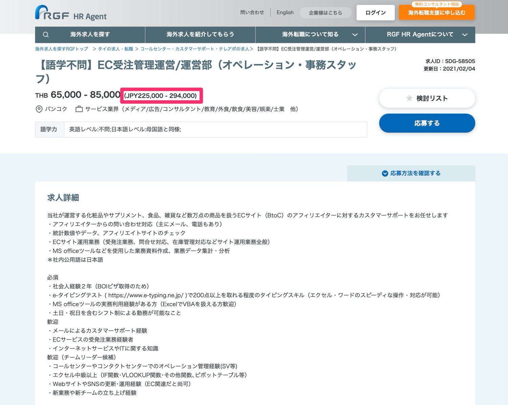
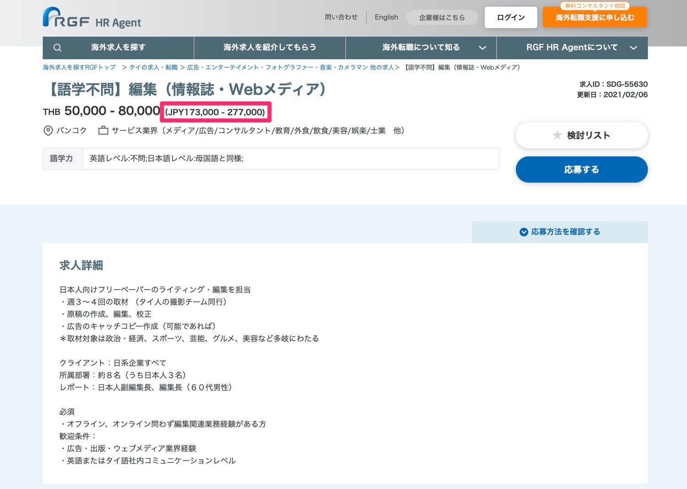
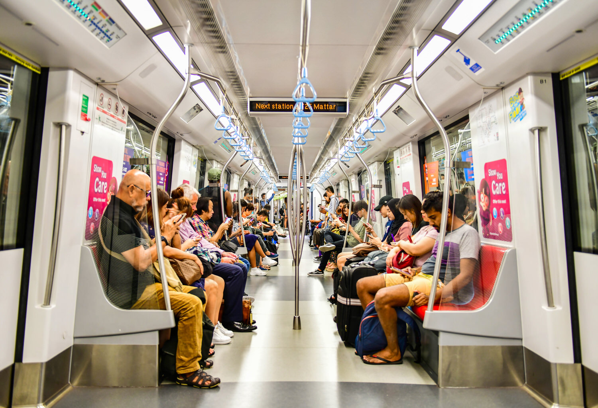

【保存版】タイ・バンコク移住の完全ガイド【全ての悩みを解決します】
こんにちは、ゆーだいです。
バンコク移住して、約４年が経過しました。
知識と経験が増えたので、総まとめをします。
本記事の目次
- １．タイ・バンコク移住の基礎知識
- ２．移住前に、絶対にやるべきこと
- ３．ビザ、仕事、給料について解説
- ４．移住にかかる初期費用＆家探し
- ５．移住後の「税金、保険、病院」
- 番外編：子連れで移住を考える方へ
上記の内容で解説します。
それでは、順番にみていきましょう。
１．タイ・バンコク移住の基礎知識
{kind=link}
| メリット | デメリット |
| 温暖な気候 | 全体的に適当 |
| 花粉がない | 空気が汚い |
| 物価が安い | 渋滞がヒドい |
上記のとおり。
もちろん他にもありますが、全て解説したらキリがありません。
なお、いくつかだけ下記にて補足します。
※メリットは他のサイトでの解説も多いので、今回はデメリット部分を中心に深堀りします。
花粉がないのは、地域による
僕は重度の花粉症です。
日本にいると、なぜか「３月〜10月」くらいまで発症しており、辛いです。
しかしバンコク中心部だと花粉がなく、とても快適です。
しかし、田舎だと花粉あり
残念なお知らせですが、チェンマイやチェンライといったタイの北部だと、花粉が多かったりします。
なお、花粉症の薬はどこでも売っているので、その点は安心です。
※補足：チェンマイやチェンライ以外でも、田舎の地方だと花粉が多いはずです。
物価も安いけど、地域による
続いて「物価」の補足です。
よくある話で「バンコクは物価が安く、お金が減らない」といった話もあります。
仮に「バンコクの中心部」に住むならば、ぶっちゃけ「日本の地方都市と同じくらいの価格感」だったりします。
なお物価の高い地域は「プロンポン、トンロー、アソーク」の３つです。
逆にコスパ良い地域は「エカマイ、プラカノン、オンヌット、シーロム」といった場所です。
ここは深堀りすると長くなるので、後半の「家探し」のパートで解説します。
環境汚染と渋滞がヒドい
バンコクについて語るには、ここは外せません。
まず中心部は空気が汚く、排気ガスも多いです。
あと17時〜20時くらいは渋滞も酷く、車移動だと消耗します。
窓を開けたりすると、空気清浄機の数値が上がり、空気の汚さが可視化されます笑。
とはいえ外でランニングでもしない限りは、そこまで危険ではないかなと思っています。
また渋滞に関しては、最近はリモートワークも増えており、まぁ問題ないかなと。
電車移動も可能です。
※僕はバイクタクシーで移動することが多いですが、これは危険性も高かったりするので、自己責任でどうぞ。
結論：これら以外は最高です
というわけで、しょっぱなから「バンコクの悪い部分」ばかりを書いてしまい、申し訳ないです。
つまり「良い部分」は分かっており、しかし「悪い部分」が綺麗に見えていないのかなと。
僕の記事では、いきなり悪い部分を書きまくったので、ここで「自分には無理だな」と思ったら、別の国を検討しましょう。
これらの悪い点を凌駕するほどに、タイには魅力があります。
ゆるい国民性で、基本は物価も安く、僕は大好きです。
２．移住前に、絶対にやるべきこと
{kind=link}
移住失敗する人の「共通点」とは
僕はもともと「フィリピンのセブ島」に住んでいました。
現地就職して働いていたのですが、当時は「フィリピン移住の失敗者」を数多く見てきました。
本当はタイを例にした方が良いかもですが、セブ島の方が深い実体験があるので、セブをベースに解説します。
いきなり移住は、基本的に無理ゲーです
失敗パターンは下記のとおり。
- 手順①：突然に海外就職を決意する
- 手順②：いきなりセブ島で現地就職
- 手順③：来てみたら思ったのと違う
- 手順④：３ヶ月くらい耐えて、限界
- 手順⑤：合わないので辞めて、帰国
上記の手順にて、失敗者を数多く見かけました。
言うまでもなくですが、まずは現地を見ないとダメですよ。
最低でも「１週間くらいの短期旅行はすべき」だと思います。
そうじゃないと、理想と現実のギャップで消耗です。
生活するように、旅しよう
僕がオススメする方法は、タイを旅しつつ「生活イメージを持つこと」です。
例えばですが、まずは現地の求人を眺めてみます。
すると「会社の住所」が記載されているはずなので、その近辺を旅してみましょう。
できればホテルも借りて、住むのもあり。
- 現地のローカル飯は、美味しいか？
- その近辺の街並みは、どんな感じか？
- 近くにスーパーはあるか？ 品質は？
- 駅から会社は近いか？ 歩ける距離か？
- 住んでみて快適か？ ワクワクするか？
例えば上記の感じで、色々と考えてみましょう。
タイの旅経験が長いなら話は別ですが、イメージだけで移住すると失敗します。
マレーシアはぶっちゃけ、生活しづらいですよ。
もちろん地域差もありますが、僕は断然にタイをオススメするし、発展具合もタイが勝ってると思います。
繰り返しですが、まずは現地をみることが大切です。
コロナが収まれば週末旅行でも可能なので、まずは現地に足を運んでみてください。
補足：タイ移住のハードルは低い
参考までにですが、タイ移住の難易度も解説します。
僕はマレーシアに住んだり、ドバイに住んだり、フィリピンに住んだりしてきました。
しかしタイは圧倒的に「日本人にフレンドリー」です。理由は下記です。
- 日本語サービスが充実（病院も日本語OKです）
- 日本食レストランが多い。味も日本と変わらない
- 日本の食材は、ほぼ全てが手に入る（ちょい高い）
- タイ人は優しくて、日本語を学んでいる人も多い
- 日本人の移住者も多く、日本人コミュニティあり
上記のとおり。
言ってしまえば、タイに住みつつ、日本と同じように暮らせます。
そういった暮らしに意味があるのか謎ですが、駐在員系の人はそういったスタイルだと思います。
あと家探しとかも日本人エージェントが多いので、英語やタイ語が話せなくても、ほぼ100%困りません。
３．ビザ、仕事、給料について解説
{kind=link}
- その①：ビザは３種類だけ覚えよう
- その②：現地就職にもチャンスあり
- その③：給料は、日本の新卒くらい
上記の３つを解説します。それではみていきましょう。
その①：ビザは３種類だけ覚えよう
結論は次の３つです。
- 就労ビザ
- 結婚ビザ
- エリートビザ
他にもありますが、大半の日本人は上記３パターンのはず。
まずは「エリートビザ」が簡単なので、ここから解説します。
エリートビザ：お金を払えば移住完了
僕が取得しているビザです。
ある程度の資金がある方は、これが便利です。
- ５年有効のビザ ：約200万円（＝40万円✕５年）
- １０年有効のビザ：約350万円（＝35万円✕１０年）
- ２０年有効のビザ：約700万円（＝35万円✕２０年）
ざっくりですが、上記のとおり。
僕は「５年有効のビザ」を持っていますが、たぶん時期が来たら延長すると思います。
ここは代理店がありますので、代理店経由で申し込みしましょう。
別に上乗せ料金とかもないので、どこでも大丈夫だと思います。
なお、僕は「株式会社大丸トレーディングさん」を経由して申し込みました。 ２週間後にはビザ発行されて、楽ちんでした。
その②：現地就職にもチャンスあり
いきなり資金準備が難しいなら、まずは「現地就職」もありです。
ぶっちゃけ東京で働くよりも、たぶん貯金できると思います。
具体例で解説します。
求人①：EC受注管理運営/運営部

こちらは「日本語でアフィリエイターをサポートする業務」となります。
{kind=link}
アフィリエイトを知らない方だと難しいかもですが、ブログをやっている方とかなら、わりと合格できるのでは…と思ったりします。
また赤枠が給料ですが、日本円で「25万円」くらいです。
これは現地で生活したら分かりますが、間違いなく貯金できます。
家族での移住だと少し厳しいかもですが、単身の方なら、わりと余裕かなと思います。
» 求人の詳細はこちら
求人②：情報誌・Webメディアの編集

こちらは「日本人向けフリーペーパーの編集」という業務です。
先ほどの求人と同じで、語学不問です。
{kind=link}
編集経験が必須とありますが、たぶんハードルは低めです。
これで「月収20万円」とかは貰えるので、普通にありだと思います。
なお、僕が新卒でフィリピン就職したときは、給料が「12万円」でした。
でも会社がホテル支給してくれたので、お金は超余裕でした。
» 求人の詳細はこちら
まずはエージェント相談もあり
というわけで、求人のピックアップをしてみました。
もっと知りたい方は「バンコク 日本人 求人」で調べてみてください。
先ほど紹介した求人は、僕が５分のリサーチで見つけた求人です。
他にも大量にありますので、是非どうぞ。
これもググれば出てきますので、複数へのお問い合わせもあり。
いただいた求人を見つつ、場合によっては「現地オフィスの見学」をするのも良いかもですね。
会社選びは大切だと思うので、わりとじっくり探し、考えるのもありだと思います。
その③：給料は、日本の新卒くらい
最後に給料についても触れておきます。
これは案件次第でもありますが、ざっくり下記です。
- 営業職：５〜８万バーツ（17万〜28万円）
- 事務職：５〜８万バーツ（17万〜28万円）
- 技術職：６〜20万バーツ（20万〜70万円）
- マネージャー：７〜20万バーツ（25万〜70万円）
この点は、僕はそこまで詳しくないです。
スイマセン。しかしリサーチした限り＆現地での体感だと、これくらいだと思います。
なのでIT系の仕事でリモートワーク可能なら、田舎に住むだけで「貯金余裕すぎ…」という状況を作れます。
というわけで、ビザ、仕事、給料パートは以上です。
いったん中間地点ですね。お疲れさまです。
４．移住にかかる初期費用＆家探し
ここからは「本格的に移住する場合に、初期費用はどれくらいか」という疑問に答えていきます。まずは結論から書きます。
{kind=link}
上記のとおりです。
ここを見て「え？ それだけ？」と思うかもですが、これで問題なしです。
理由を解説していきます。
航空券を買えば、それでOK
移住となると、わりと大掛かりに思うかもです。
しかし僕が思うに「失敗前提で動く」くらいの気持ちで良いと思います。
現地でいきなり家は借りず、まずはホテル暮らしで充分です。
荷物とかも最小限にして、現地調達もできます。
【最高】バンコクにあるサービスアパートメント３選【少し高級です】
本日は久しぶりに「バンコク紹介のブログ」でも書こうかなと思っています。テーマとしては、バンコクにある「快適すぎる、サービスアパートメント3選」という感じ。ニッチですが、昔の僕が読みたかった記事です。1ヶ月ほどバンコクに住む際に、最適な方法です。
例えば上記には「サービスアパートメント」のまとめ記事があります。
実際に僕が宿泊したホテルですが、めちゃくちゃ快適です。
ちょっと値段が高めなら、ググれば他にも出てきます。
キーワードは「バンコク サービスアパートメント」とかですかね。
徐々に慣れつつ、家を探す
仮暮らしをしつつ、必要なモノを現地調達しつつ、徐々に現地に慣れていきましょう。
なお参考までに、現在の僕は「ドバイ」に滞在しています。
今回が初めてのドバイで、今後はこちらに移住を考えています。
たぶん参考になるはずなので、僕自身が「どのように、ドバイでの家探しを進めているか」を解説します。
バンコクに置き換えても、全く同じことができます。
ここを深堀りします。
まずは中心地だと便利
バンコクを例にするなら「プロンポン、アソーク、トンロー」あたりですね。
物価は高めになりますが、ビビるくらいに便利です。
日本で例えるなら、自由ヶ丘とかですかね。
住みつつ、モール探し
タイはデリバリーが発達していますが、とはいえ買い物は必須です。
買い物をするとなったら、スーパーやモールが必要ですよね。
どんなに綺麗な家でも、近くにモールがなかったら不便です。
というわけで、まずは「モールやスーパーの探索」をオススメします。
日本食材もありますし、サラダバーもあって便利。
あとは家電から洋服まで、すべて揃っています。
デメリットは、すこし高いくらいですかね。
住みつつ、モール探索しつつ、自分に合った「モール or スーパー」を探すと良いです。
慣れてきたら、賃貸契約
仮暮らしを１ヶ月くらいして、すると徐々に慣れてきます。
それほどに、バンコクには魅力があります。
というわけで気に入ったなら、賃貸物件を探していきましょう。
どのように、物件を探すか
結論は「日本人の不動産エージェントに相談」で良いと思います。
とはいえ現地には色々なエージェントがおりまして、リサーチしてみるのもありかなと思います。不動産エージェントから物件提案を貰い、そこから選んでいきましょう。なお、賃貸契約は「最低１年」が基本です。
補足：不動産投資について
もしかしたら「賃貸じゃなく、いっそのこと買うのはどうかな」と考える方がいるかもです。ただ、バンコクでの不動産購入は、かなり慎重になった方が良いです。
僕はプロンポンという地域に住んでいましたが、街にはタワマンだらけで、しかも大半が空室でした。
タイ不動産は、タイの富豪達が長期投資として買っているので、ぶっちゃけ利回りで考えると微妙だったりもします。僕は専門家じゃないですが、いったん買おうと検討したのですが、やはりやめる決意をしました。
５．移住後の「税金、保険、病院」

ここまでお疲れさまでした。
続いては「税金、保険、病院」などのパートに進みます。
{kind=link}
不安を感じる方も多いですよね。
税金は、どうするか
ここのパートは「フリーランスや経営者向け」という感じです。
日本やタイで収入を得た場合に、どのように処理するか、という問題ですね。
まずは難易度の低い方法からシェアします。
方法①：納税は「日本」にする
これが最も簡単な方法です。
タイに住みつつ、物価の安さを享受しつつ、税金は日本に収めます。
まずはこの方法が良いのでは、と思ったりします。僕もそうでした。
しかし日本は税率の高い国なので、徐々に「完全なる海外移住」を目指すなら、他にも手続きが必要です。詳しくは、下記にて解説していきます。
方法②：納税を「タイ」にする
例えばタイで法人などを作り、タイに納税します。
タイは日本よりも税率が低いので（法人税率20%）、これもありですね。
なお、クライアントワークをするなら「お金の受け取り」が必須ですよね。
その場合は「トランスファーワイズ」がオススメです。
僕もよく使っていますが、日本からタイへの送金なら、２日くらいで着金します。
下記リンクだと、僕のクーポン付きなので、良もしかったら是非です。
» トランスファーワイズに登録する
方法③：納税を「他国」にする
ここは、すこし上級編です。僕が使っている方法です。
いまはドバイに法人を作ったので、法人税率は０％です。
しかしドバイでは他の「諸費用（ライセンスフィー）」がかかるので、完全なゼロではありません。
とはいえ、、ここを解説すると長いので、いったん以上とします。
現地で「保険」はどうするか
結論として「タイ移住するなら、保険は必須」と考えた方がいいです。
というのも、タイの病院は高いからです。
もちろん病院にもよるのですが、最も高いのは「サミティベート病院」という場所です。 ここは24時間の日本語窓口があり、診察でも通訳が付きます。施設も綺麗で、めちゃくちゃ安心です。
【まとめ】バンコクで「日本語OK」な病院は３つある【費用・持ち物】
「バンコクで日本人向けの病院を知りたい。体調不良なので病院に行きたいけど、タイ語は話せないので、、、日本語対応の病院を探しています。どこが良いのか、詳しく教えてください。」←こういった疑問に答えます。本記事の内容：１．バンコクで「日本語OK」な病院は３つある／２．体験談：サミティベート病院の雰囲気を公開します
詳しくは上記を見てほしいですが、基本的に「医療費は高い」と考えた方がいいです。なので現地保険に入りましょう。
なお、参考までに僕が入っている保険は「Pacific Cross」という会社の「Maxima Plan」というプランです。お値段は「年間13万円くらい」でした。
あと人によって最適な保険は変わってくるはずなので、色々と検討するのが良いと思います。
なお、言うまでもなくですが、バンコクには「日本人の保険屋さん」がたくさんいます。どこか良さそうな場所にメールしつつ、相談したら問題なしです。
補足：現地のAmazonについて
移住するとなったら、Amazonも大切ですよね。
これは僕だけかもですが、、IT系の方なら分かってくれるはず。
なので少しだけ書いておくと、下記２つを覚えておきましょう。
- 日本のAmazonから発送できます
- 現地なら「Lazada」が定番です
順番にサクッとみていきますね。
日本のAmazonから発送できます
まず大半の商品に関しては、日本のAmazonからタイに発送できます。
巨大な家電とかは無理ですが、例えばガジェット系とか、本とかですね。
しかし本は発送不可の商品も多いので、Amazonとセットで「紀伊國屋書店ウェブストア」も見ておくといいです。 ここもタイに発送しており、Amazonよりも品揃えが良いです。
ただAmazonでも紀伊国屋でも、送料は高めです。
まとめて買いましょう。
現地なら「Lazada」が定番です
タイにAmazonはありません。その代わりに「Lazada」というアプリがあります。
もしくは「ショボい版の楽天」です。
でも品揃えは良かったりするので、大半のものはここで買えます。
しかしタイの物流は遅いので、届くまでに１週間くらいかかります。
というわけで、オンラインショップの話は以上です。次の章に進みましょう。
番外編：子連れで移住を考える方へ
{kind=link}
✅ゆるぼ：タイに子連れで移住した方
現在は「タイ移住ガイド」を作っており、そこに「子連れ移住」のチャプターを追加予定です。しかし、僕の知識が弱い部分なので「経験者の声」を募集します。経験談を送っていただく形で、謝礼１万円をお支払いします。可能な方はDM頂けましたら助かります🙇♂️— マナブ@バンコク (@manabubannai) March 1, 2021
いったん知識を集めておりますので、お待ちくださいませ。
集まった内容を僕の方で見やすく編集し、そして記載します。
お知らせ（2021年4月7日）：寄稿文が完成しました
経験者の方から、子連れ移住の寄稿文をいただきました。
かなり濃密な情報をいただけましたので、下記よりアクセス可能です。
» 【タイ】子連れ移住ガイドの寄稿文
ー・ー・ー・ー・ー
というわけで、タイ・バンコクの移住ガイドは以上となります。
基本的には網羅しつつ、必要最低限に絞りました。
なお、僕のブログでは「タイやバンコクの旅行情報」も豊富に書いております。
気になる方は、ブログの検索バーで調べてみてください。
というわけで、以上です。
ここまで読んで頂きまして、ありがとうございました。
【バンコク】最高級に美味いレストラン５選【絶対に後悔しません】
バンコクにある「最高級に美味いレストラン」をまとめました。選んだ基準は「健康的である、リピートできる」という２点です。すべて実体験に基づいており、実際に僕もリピートしています。高級レストランも含まれますが、財布と相談しつつも検討してみてください。最高級の満足度に繋がるはずです。
P.S：普段の僕は「Twitter」を軸に発信しています。また最近は「Webマーケ教材」の作成に注力しており、ネットで稼ぐスキルを学べます。ブログの更新通知は、Twitterからお知らせいたします。